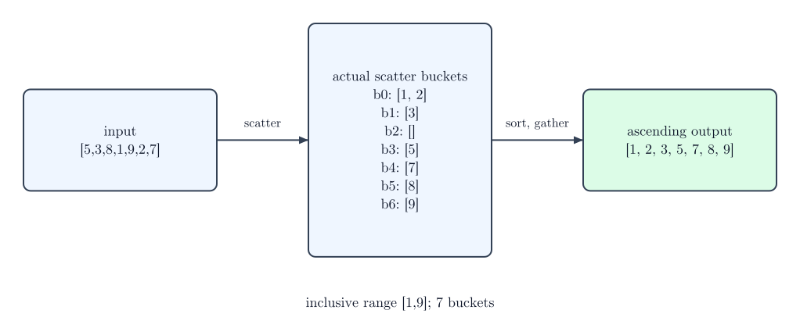
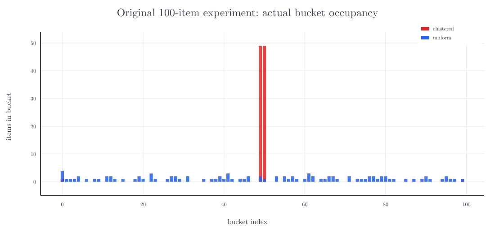
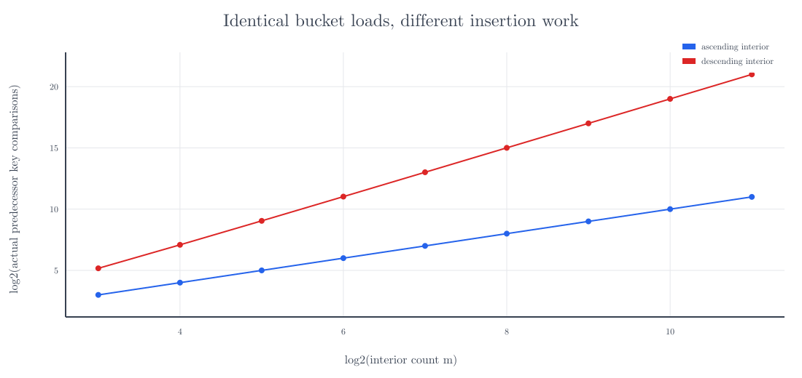

Bucket Sort: Distribution, Order and Actual Work
Abstract
Bucket sort uses values to scatter items into ordered ranges, sorts each range, and gathers the results. We retain the original seven-integer example and the 100-item uniform-versus-clustered experiment. Native C++ now supplies the exact scatter mapping, actual bucket snapshots, insertion comparisons and shifts, and reproducible-toolchain synthetic inputs. A second experiment holds every bucket occupancy fixed while changing input order: one case is linear and the other quadratic. Occupancy bounds the work, but does not determine it. All programs also support the complete signed 32-bit integer range without overflow.
A small scatter, insertion sort and gather
The input [5,3,8,1,9,2,7] has minimum 1, maximum 9 and inclusive span 9. For n items, this implementation uses n buckets and maps a value x to
For example b(5)=3 and b(9)=6. Bucket two is empty; values 1 and 2 share bucket zero. That bucket is already ordered, so its insertion sort performs one false predecessor-greater-than-key comparison and no shifts. The diagram and table use records from the actual sorting kernel, rather than recomputing occupancy in the report.
#include <dm/dm.hpp>
int main() {
std::filesystem::create_directories("build");
const auto trace=dm::algorithms::bucket_sort_trace({5,3,8,1,9,2,7});
if (trace.output!=std::vector<int>{1,2,3,5,7,8,9}) return 1;
std::string contents="actual scatter buckets";
std::print("| bucket | encounter order | sorted contents | key comparisons | shifts | final key stores |\n"
"| ---: | :--- | :--- | ---: | ---: | ---: |\n");
for (std::size_t b=0;b<trace.buckets.size();++b) {
const auto& row=trace.buckets[b];
contents+=std::format("\nb{}: {}",b,row.input);
std::print("| {} | {} | {} | {} | {} | {} |\n",b,row.input,row.output,row.key_comparisons,row.shifts,row.placements);
}
dm::graphics::Diagram diagram(65,1100);
dm::graphics::DiagramNodeStyle style;style.width=3.8;style.height=2.0;
diagram.node("input",{0,0},"input\n[5,3,8,1,9,2,7]",style);
style.width=3.6;style.height=4.6;
diagram.node("buckets",{5.5,0},contents,style);
style.width=3.8;style.height=2.0;style.fill={220,252,231};
diagram.node("output",{11,0},std::format("ascending output\n{}",trace.output),style)
.edge("input","buckets","scatter")
.edge("buckets","output","sort, gather")
.text({5.5,-3.2},std::format("inclusive range [{},{}]; {} buckets",trace.minimum,trace.maximum,trace.bucket_count))
.save_svg("build/bucket_sort_pipeline.svg");
std::print("\nInput destinations: {}. Sorted: {}.\n",trace.bucket_of_input,trace.output);
std::print("Occupied buckets: {}; maximum load: {}; sum of squared loads: {}.\n",
trace.nonempty_buckets,trace.max_occupancy,trace.occupancy_square_sum);
}| bucket | encounter order | sorted contents | key comparisons | shifts | final key stores |
|---|---|---|---|---|---|
| 0 | [1, 2] | [1, 2] | 1 | 0 | 1 |
| 1 | [3] | [3] | 0 | 0 | 0 |
| 2 | [] | [] | 0 | 0 | 0 |
| 3 | [5] | [5] | 0 | 0 | 0 |
| 4 | [7] | [7] | 0 | 0 | 0 |
| 5 | [8] | [8] | 0 | 0 | 0 |
| 6 | [9] | [9] | 0 | 0 | 0 |
Input destinations: [3, 1, 5, 0, 6, 0, 4]. Sorted: [1, 2, 3, 5, 7, 8, 9]. Occupied buckets: 6; maximum load: 2; sum of squared loads: 9.

The inclusive span is important: x-minus-minimum is nonnegative and strictly less than the span, so every destination is between zero and n-minus-one. The mapping is monotone. If b(x)<b(y), then x cannot exceed y. Sorting each bucket therefore makes their concatenation globally sorted. Appending in input order and moving only strictly greater predecessors preserves equal-key order; the current API exposes integers, without satellite records to label duplicates.
The core widens before subtracting, fixing an overflow in the old expression that cast x-minus-minimum only after doing the subtraction in int. To avoid overflow even in the subsequent product, write n=qR+r for inclusive span R:
Here d and r are at most 2^32-minus-one, so their product fits uint64_t. The result is exact integer arithmetic, without floating-point rounding or a nonstandard wide integer in the library. The public mapping helper also accepts bucket counts up to SIZE_MAX without allocating those buckets.
Original occupancy experiment, with actual insertion work
Keep the original sample size 100, seed one, integer-uniform draws in [0,999], and normal cluster with mean 500 and standard deviation four. The first two clustered values are replaced by 0 and 999. Those outliers stretch the observed range so the interior values land in a few neighbouring buckets. Input generation now lives in datamunge; the report reads actual bucket records. Standard-library distribution algorithms can differ across toolchains, so the displayed sample is reproducible for this toolchain, without promising universal seeded outputs.
#include <dm/dm.hpp>
int main() {
std::filesystem::create_directories("build");
const auto samples=dm::algorithms::bucket_sort_workloads(100,1);
const auto uniform=dm::algorithms::bucket_sort_trace(samples.uniform);
const auto clustered=dm::algorithms::bucket_sort_trace(samples.clustered);
std::print("| sample | occupied buckets | largest load | sum of squared loads | key comparisons | shifts | final key stores |\n"
"| :--- | ---: | ---: | ---: | ---: | ---: | ---: |\n");
for (const auto& [name,trace]:std::vector<std::pair<std::string,const dm::algorithms::BucketSortTrace*>>{
{"uniform",&uniform},{"clustered",&clustered}}) {
auto expected=trace->input;std::sort(expected.begin(),expected.end());
if (trace->output!=expected || dm::algorithms::bucket_sort(trace->input)!=expected) return 1;
std::print("| {} | {} | {} | {} | {} | {} | {} |\n",name,trace->nonempty_buckets,trace->max_occupancy,
trace->occupancy_square_sum,trace->key_comparisons,trace->shifts,trace->placements);
}
std::vector<double> x,balanced,clumped;
for (std::size_t b=0;b<uniform.buckets.size();++b) {
x.push_back(b);balanced.push_back(uniform.buckets[b].input.size());clumped.push_back(clustered.buckets[b].input.size());
}
dm::graphics::RPlot::create()
.bars(x,clumped,"clustered",dm::RGB{220,38,38})
.bars(x,balanced,"uniform",dm::RGB{37,99,235})
.title("Original 100-item experiment: actual bucket occupancy")
.x_label("bucket index").y_label("items in bucket").size(1100,520)
.save_svg("build/bucket_sort.svg");
std::print("\nRanges: uniform [{},{}], clustered [{},{}]. The two endpoint outliers are retained.\n",
uniform.minimum,uniform.maximum,clustered.minimum,clustered.maximum);
}| sample | occupied buckets | largest load | sum of squared loads | key comparisons | shifts | final key stores |
|---|---|---|---|---|---|---|
| uniform | 68 | 4 | 176 | 35 | 18 | 32 |
| clustered | 4 | 49 | 4804 | 1115 | 1023 | 96 |
Ranges: uniform [9,988], clustered [0,999]. The two endpoint outliers are retained.

The cluster has repeated integer keys, and insertion sort never shifts equal keys. A large bucket is therefore not automatically a worst case. The original claim that the occupancy picture alone decides speed was too strong: order and distinctness within each bucket also matter. We report logical operations, not elapsed times or a platform performance ranking.
The same occupancy, linear versus quadratic insertion work
Let m be the number of interior values and n=m+2. Put endpoints 0 and M=(m+2)(m+1) around the distinct interior values 1 through m. Since m*n < M+1, every interior value and zero map to bucket zero, while M maps to bucket n-minus-one. The occupancies are always m+1 and one, with all other buckets empty. Change only the order of the interior values:
For A_m, each insertion stops at one false comparison: K=m and S=0. For D_m, interior value at position i shifts i-minus-one earlier interior values, then compares with zero and stops. Thus actual comparisons K and shifts S are
Both inputs have the same squared-load sum (m+1)^2+1 and the same sorted output. The native generator checks that M fits int before allocating.
#include <dm/dm.hpp>
int main() {
std::filesystem::create_directories("build");
std::vector<double> sizes,ascending_work,descending_work;
std::print("| interior m | total n | largest load, both | squared-load sum, both | ascending comparisons | descending comparisons | descending shifts |\n"
"| ---: | ---: | ---: | ---: | ---: | ---: | ---: |\n");
for (const std::size_t m:{8,16,32,64,128,256,512,1024,2048}) {
const auto ascending=dm::algorithms::bucket_sort_trace(dm::algorithms::bucket_sort_collision_input(m,false));
const auto descending=dm::algorithms::bucket_sort_trace(dm::algorithms::bucket_sort_collision_input(m,true));
if (ascending.output!=descending.output || ascending.shifts!=0 || ascending.key_comparisons!=m ||
descending.key_comparisons!=m*(m+1)/2 || descending.shifts!=m*(m-1)/2 ||
ascending.occupancy_square_sum!=descending.occupancy_square_sum) return 1;
std::print("| {} | {} | {} | {} | {} | {} | {} |\n",m,m+2,descending.max_occupancy,
descending.occupancy_square_sum,ascending.key_comparisons,descending.key_comparisons,descending.shifts);
sizes.push_back(std::log2(static_cast<double>(m)));
ascending_work.push_back(std::log2(static_cast<double>(ascending.key_comparisons)));
descending_work.push_back(std::log2(static_cast<double>(descending.key_comparisons)));
}
dm::graphics::RPlot::create()
.lines(sizes,ascending_work,"ascending interior",dm::RGB{37,99,235},2)
.points(sizes,ascending_work,"",dm::RGB{37,99,235},4)
.lines(sizes,descending_work,"descending interior",dm::RGB{220,38,38},2)
.points(sizes,descending_work,"",dm::RGB{220,38,38},4)
.title("Identical bucket loads, different insertion work")
.x_label("log2(interior count m)").y_label("log2(actual predecessor key comparisons)")
.size(1100,520).save_svg("build/bucket_sort_order_work.svg");
}| interior m | total n | largest load, both | squared-load sum, both | ascending comparisons | descending comparisons | descending shifts |
|---|---|---|---|---|---|---|
| 8 | 10 | 9 | 82 | 8 | 36 | 28 |
| 16 | 18 | 17 | 290 | 16 | 136 | 120 |
| 32 | 34 | 33 | 1090 | 32 | 528 | 496 |
| 64 | 66 | 65 | 4226 | 64 | 2080 | 2016 |
| 128 | 130 | 129 | 16642 | 128 | 8256 | 8128 |
| 256 | 258 | 257 | 66050 | 256 | 32896 | 32640 |
| 512 | 514 | 513 | 263170 | 512 | 131328 | 130816 |
| 1024 | 1026 | 1025 | 1050626 | 1024 | 524800 | 523776 |
| 2048 | 2050 | 2049 | 4198402 | 2048 | 2098176 | 2096128 |

Complexity: a second-moment bound and a sharper order-sensitive account
Let bucket b contain N_b values, and let r buckets be occupied. Each successful insertion shift removes one strict inversion inside its bucket. Thus S is exactly the sum of those inversion counts. Each insertion makes at most one additional false comparison, and performs one final key store:
Scattering, bucket allocation and gathering take linear work. With amortized vector append costs, the nontrivial algorithm therefore takes Theta(n+S), bounded above by O(n+sum_b N_b^2). Auxiliary storage is O(n); actual snapshots also take O(n). Empty, singleton and all-equal inputs return through the original shortcut, allocating no buckets and recording no fictional insertion work. The all-equal case is linear because the range scan still visits n items.
For a fixed bucket partition and independent draws with bucket probabilities p_b, expand each squared occupancy into single-item and pair indicators:
If n equally likely buckets are used, the sum is 2n-minus-one, giving expected linear work even with insertion sort inside each bucket. This is the classical probabilistic model, discussed by [Cormen and colleagues](https://mitpress.mit.edu/9780262046305/introduction-to-algorithms/) and [Bercea and Even](https://arxiv.org/abs/2002.10499). It is an expectation over inputs, not a random choice made by the sorter. Our integer implementation uses the observed minimum and maximum, so the partition itself is sample-dependent; the fixed-partition independence equation must not be applied literally to its 100-item table. That table is an executed experiment, not an expected-time proof. Finite integer ranges can also create many equal keys in a bucket, reducing shifts even when the squared-load bound is large.
Boundary checks and the corrected full-range arithmetic
The full signed-range example would overflow the old int subtraction before its cast. The checked mapping and shared sorter now handle both endpoints, negative values and duplicate extremes. A trace shortcut means no buckets were actually built; its zero occupancy counters are not a claim that the input has no values. Counter overflow throws rather than silently corrupting evidence.
#include <dm/dm.hpp>
int main() {
std::print("| input | sorted | shortcut | allocated buckets | comparisons | shifts |\n"
"| :--- | :--- | :--- | ---: | ---: | ---: |\n");
for (const auto& input:std::vector<std::vector<int>>{
{},{42},{7,7,7,7},{INT_MAX,INT_MIN,0,-1,1,INT_MIN,INT_MAX}}) {
const auto t=dm::algorithms::bucket_sort_trace(input);
auto expected=input;std::sort(expected.begin(),expected.end());
if (t.output!=expected || dm::algorithms::bucket_sort(input)!=expected) return 1;
std::print("| {} | {} | {} | {} | {} | {} |\n",input,t.output,t.shortcut,t.bucket_count,t.key_comparisons,t.shifts);
}
std::print("\nFull-range endpoint indices in seven buckets: {}, {}.\n",
dm::algorithms::bucket_sort_index(INT_MIN,INT_MIN,INT_MAX,7),
dm::algorithms::bucket_sort_index(INT_MAX,INT_MIN,INT_MAX,7));
bool bad_count=false,bad_value=false,bad_size=false;
try { (void)dm::algorithms::bucket_sort_index(0,0,9,0); }
catch (const std::invalid_argument&) {bad_count=true;}
try { (void)dm::algorithms::bucket_sort_index(10,0,9,10); }
catch (const std::invalid_argument&) {bad_value=true;}
try { (void)dm::algorithms::bucket_sort_collision_input(50000); }
catch (const std::length_error&) {bad_size=true;}
if (!bad_count || !bad_value || !bad_size) return 1;
std::print("Invalid bucket count, out-of-range value, oversized generator rejected: {}, {}, {}.\n",
bad_count,bad_value,bad_size);
}| input | sorted | shortcut | allocated buckets | comparisons | shifts |
|---|---|---|---|---|---|
| [] | [] | true | 0 | 0 | 0 |
| [42] | [42] | true | 0 | 0 | 0 |
| [7, 7, 7, 7] | [7, 7, 7, 7] | true | 0 | 0 | 0 |
| [2147483647, -2147483648, 0, -1, 1, -2147483648, 2147483647] | [-2147483648, -2147483648, -1, 0, 1, 2147483647, 2147483647] | false | 7 | 4 | 1 |
Full-range endpoint indices in seven buckets: 0, 6. Invalid bucket count, out-of-range value, oversized generator rejected: true, true, true.
The report uses fixed and generated inputs because there is no natural dataset needed to understand this sorting mechanism. Native tests compare sorted output with std::sort, bucket indices with an independent wide-integer rational oracle, and shift/comparison counters with prefix-rank counts. Exhaustive short arrays, full-range random inputs, huge allocation-free bucket counts and matched-load families check the claims beyond the small displayed examples.
References
- T. H. Cormen, C. E. Leiserson, R. L. Rivest and C. Stein (2022), [Introduction to Algorithms, fourth edition](https://mitpress.mit.edu/9780262046305/introduction-to-algorithms/), section 8.4, bucket sort. This report uses an observed inclusive integer range rather than the textbook fixed unit interval.
- I. O. Bercea and G. Even (2020), [Upper Tail Analysis of Bucket Sort and Random Tries](https://arxiv.org/abs/2002.10499), doi:10.48550/arXiv.2002.10499. This primary analysis distinguishes inner sorting algorithms and their probabilistic costs; the report derives its elementary second-moment bound.
- P. E. Black (2019), [bucket sort](https://xlinux.nist.gov/dads/HTML/bucketsort.html), NIST Dictionary of Algorithms and Data Structures, definition and variants.